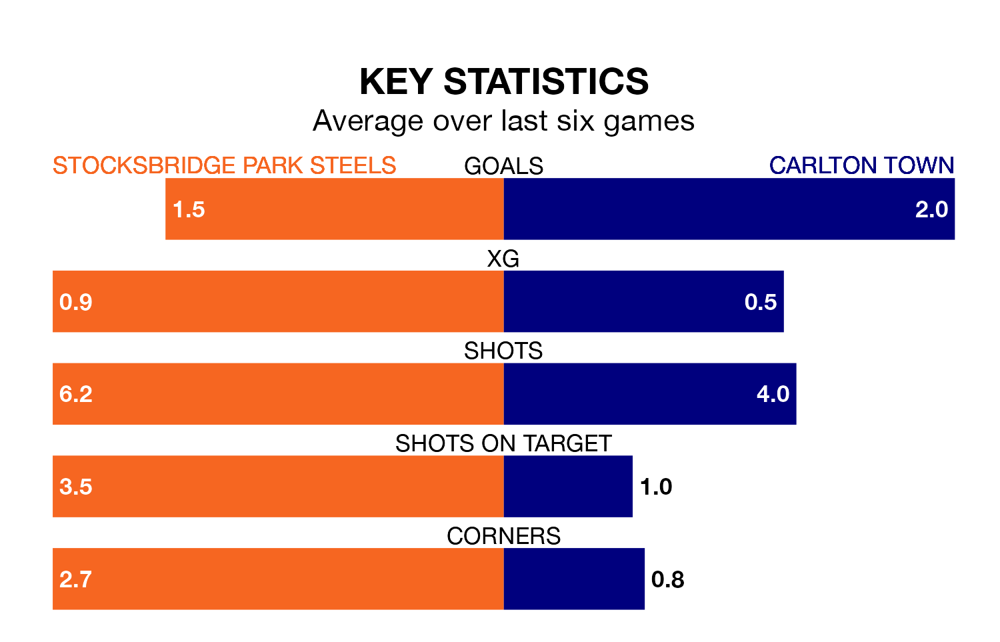

Stocksbridge Park Steels host Carlton Town on Saturday at Bracken Moor in the Northern Premier League Division One East.
In their last league match, on January 13, Stocksbridge drew with Grantham Town 2-2 at home, with their goal scored by (two).
Carlton won, 2-1 at home against Winterton Rangers, with (two) scoring their goals.
Stocksbridge are 17th in the table after 20 games, of which they have won five and drawn five, earning 20 points.
Carlton are 12 places ahead of the Steels in fifth, with 13 wins and seven losses putting them on 39 points.
With 26 goals in 20 games so far this season, the hosts are the league's third-lowest scorers with 1.3 goals per game. But they are conceding fewer than average too, letting in 29 goals at a rate of 1.4 per game.
Town, meanwhile, are average scorers, with 1.6 goals per game. They have conceded 1.3 goals per game.
Stocksbridge are in mixed form in the Northern Premier League Division One East, with two wins and three draws from their last six games.
With four wins and two losses over that period, the away side's form is better – they have taken 12 points from 18, compared to Stocksbridge's nine.
In the last three years, Stocksbridge and Carlton have played each other on three occasions. Stocksbridge won all of them.
Their last meeting was on October 21, when Stocksbridge won 2-0 away.
Updated: 08:51 (UTC), 25/01/24